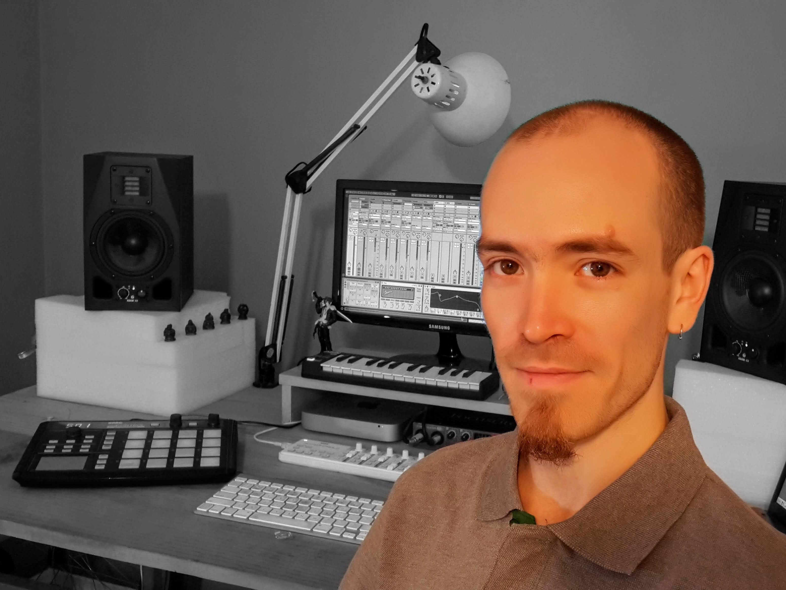

Mas de 10 años de experiencia en Sonido, tanto en vivo como en estudio.
Educación
- Productor Integral de Música y Sonido
- 2014-2016. ORT Argentina
- Técnico en Guiatrra Clásica
- 2004-2009. Conservatorio Nacional "Astor Piazzolla"
- Tecnico Computación
- 2000-2006. E.T. Nro 26 "Confederación Suiza"

- 4 de Enero de 1988
- matiascooper.dspm@gmail.com
- (54) 11 5920-5183
- (CABA) Argentina
-
LinkedIn
-
Instagram
Experiencia Profesional
- Hipódromo Argentino de Palermo S.A.
- (2018-Actualidad) - Técnico Multimedia
- Eventmedia S.R.L.
- (2017-2018) - Encargado de Sonido/Video
-
- Budda Studios
-
- (2017-2019) - Productor Musical
-
- Serson Sonido e Ilumnacinón
- (2012-2017) - Encargado de Eventos
-
- CBGB Argentina
- (2011-2012) - Encargado de Sonido
-
- Locutorio Acoyte 187
- (2011-2016) - Titular de Comercio
-
- Baccaglioni Master Works
- (2010-2011) - Asistente de Luthier
-
- Alltone Sonido
- (2010-2011) - Sonidista Junior
-